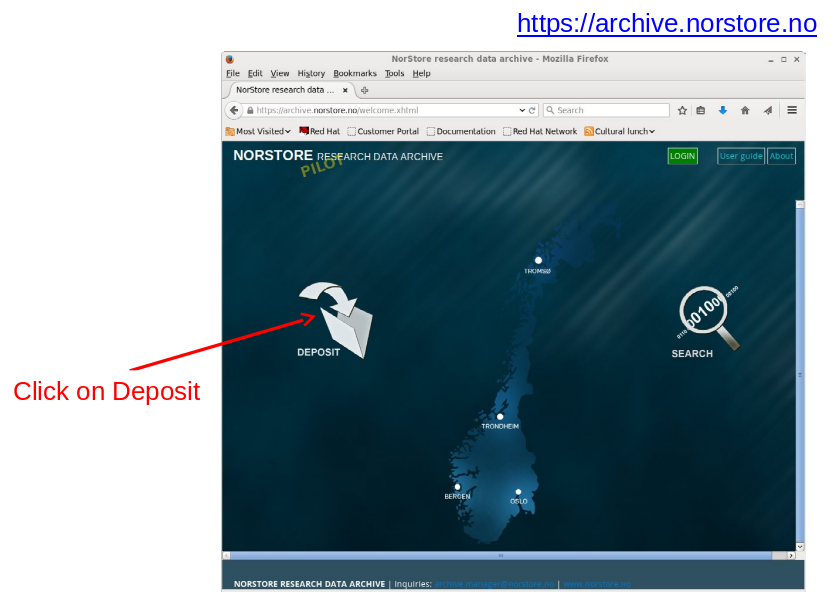
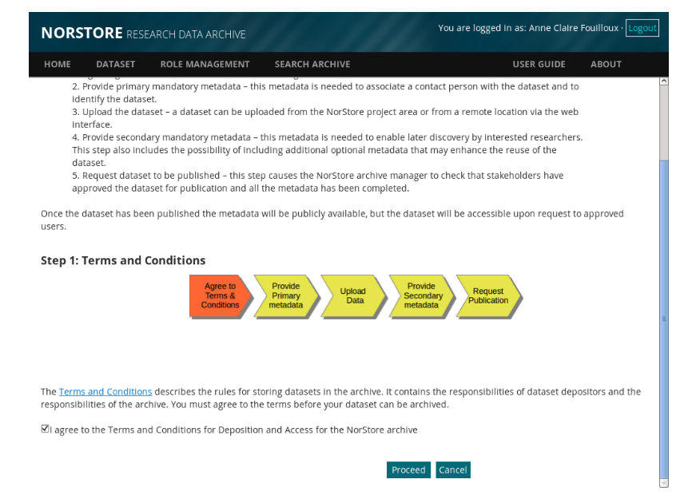
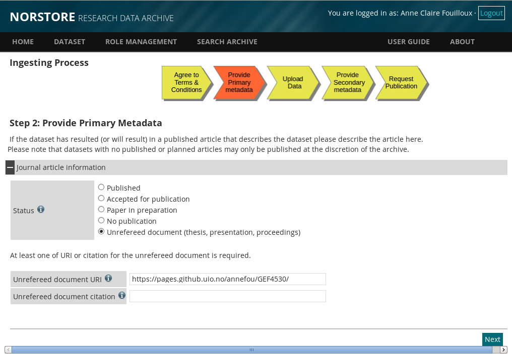
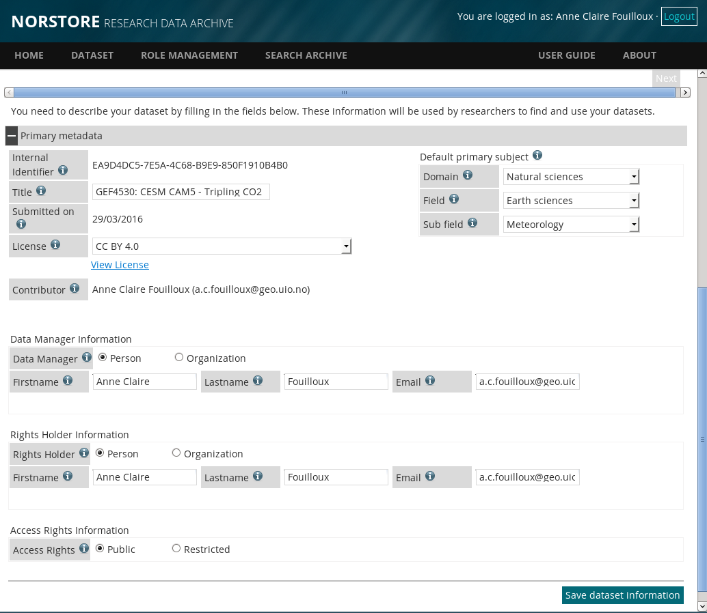
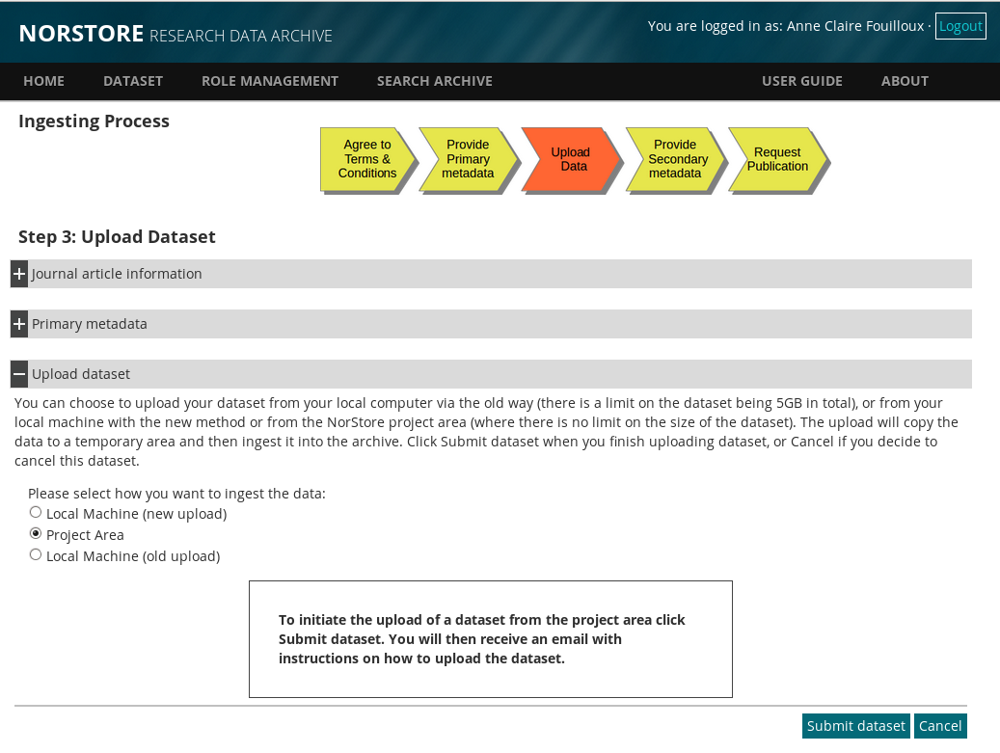
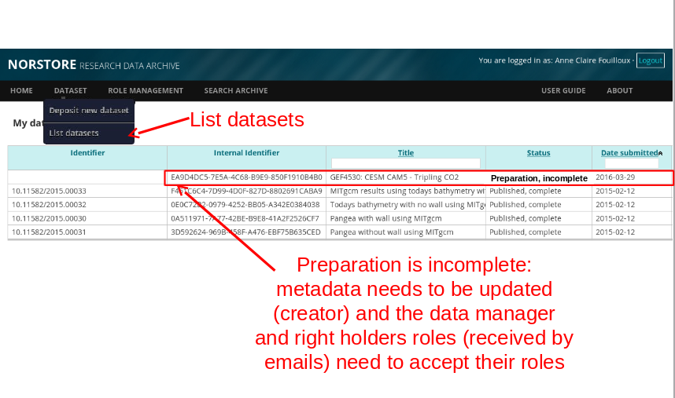
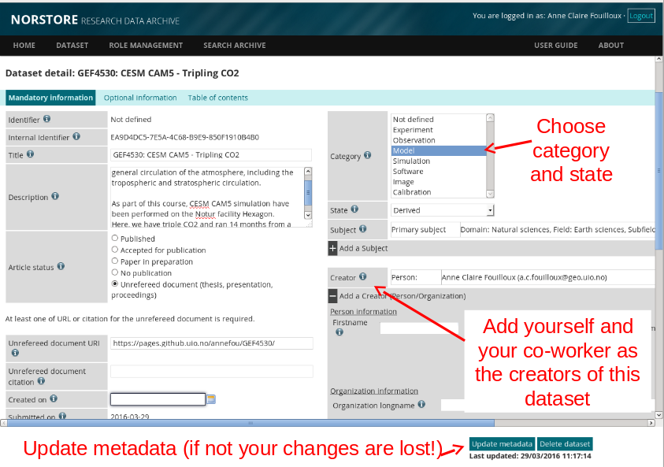

For more information, read the norStore Archive User guide.
Log onto the Web Interface
To access the Archive web interface, direct your browser to: https://archive.norstore.no and click on "Deposit".

Choose FEIDE as the Identity provider and click on Login. Use your UIO username and password to login.
Request Approval (First time users)
If you have never used the Archive before you will be presented with a page informing you that
your Feide account is not registered.
You can submit a request for access from this
page. Only approved users are allowed to deposit datasets in the Archive.
The Archive Manager will
contact you if additional information is required. Approval should be granted within 3 business days
(and usually much sooner).
Initiate Deposit request
You probably had to wait for your access request to be approved. So now when you login again, make sure you click on "Deposit" (as usual, use your UIO username and password to login). When you click on Deposit, you will be presented with a page containing a short introduction to the Archive and a link to the Terms and Conditions as shown in the figure below.

The Terms and Conditions outline your responsibilities and those of the Archive. You will need to agree (tick to agree and click on Proceed) to these before you can start the
deposit process.
Upload dataset from the norStore project area
The goal of the Archive is to provide long-term storage for datasets that are considered to be of lasting value. Your experiment is valuable for CAM-5 learners and students from GEF4530 in the coming years.
However, it is not subject to a scientific publication so tick "Unrefereed document (thesis, presentation, proceedings)" and add the course github website as URI:

Click on "next" and a new section will appear where information onyour data needs to be provided:

Adjust the title according to your experiment (here I gave the CO2 experiment as an example), and set the Data Manager and Rights Holder for your dataset.
The currently available licences covering access to a dataset are: the Creative Commons Attribution
4.0 International (CC BY 4.0 [2]), Norwegian Licence for Open Data (NLOD [3]). The licence
provides liberal access to the data which maximises the impact of the data you have published and it
ensures that proper recognition is given to you. The default licence is CC BY 4.0.
By default metadata for published datasets are considered public and access is granted to all
researchers. The Data Manager and Rights Holder that you nominate will be informed by email of
the nomination and whether they wish to accept the role. The Archive will periodically remind them
of their nomination and you will receive an email when they accept or decline the nomination. It is
your responsibility to find suitable entities (persons or organisations) that can accept the roles. Your
institute may be able to offer guidance on suitable Data Manager and Rights Holders, or you can
email the archive.manager@norstore.no for guidance.
Once completed, click on "save dataset information".
A last section will appear on the same web page where you can choose how to upload your dataset. Click on "Project Area":

You will receive an email with some intructions to upload your dataset. The upload is initiated from the web interface and completed by running the
command-line script "ArchiveDataset" on cruncher.norstore.uio.no.
Once archived and your post-processing and visualization are done, you can delete all the files stored on the norStore project area.
On norStore (cruncher.norstore.uio.no):
cd /projects/NS1000K/GEF4530/outputs/$USER/archive
As stated in the email you received, you need to create a "Manifest" file that contains a list of files that make-up your dataset.
We wish to archive everything (including files and subdirectories) in directory /projects/NS1000K/GEF4530/outputs/$USER/archive/f2000.T31T31.$EXPNAME (where EXPNAME is your Experiment Name):
cd /projects/NS1000K/GEF4530/outputs/$USER/archive
# Define properly EXPNAME (here CO2 but adjust it: sea_ice, SST, rocky)
export EXPNAME=CO2
cat > archiveFiles$EXPNAME.txt << EOF
/projects/NN1000K/GEF4530/outputs/$USER/archive///f2000.T31T31.$EXPNAME
EOF
The 3 slashes before "archive" allows to remove the prefix "/projects/NN1000K/GEF4530/outputs/$USER/archive" from the final path in the archive. It is important as you wish to be able to download your dataset anywhere and not necessarily onthe norStore project area /projects/NN1000K/GEF4530/outputs/$USER/archive.
Now you can upload your dataset:
# Do not use this UUID: a UUID is unique for a given archive request.
# The UUID you need to use is defined in the email you recieved (at the top after the title)
# Please let us know if you need help before archiving your dataset!
export UUID=EA9D4DC5-7E5A-4C68-B9E9-850F1910B4B0
ArchiveDataset $UUID archiveFiles$EXPNAME.txt
is the identifier for your dataset that should be in the email you received from the
archive manager. If you cannot find that simply log onto the archive, navigate to your
dataset and cut and paste the Internal Identifier. The command will submit a request to the
upload service to upload the dataset. The upload service checks for new datasets every hour.
You can check the status of the upload using the “ListArchiveDataset” command.
You can supply the UUID as an argument to get the status of only that dataset. By default
the command returns the status for all datasets that belong to you.
You can cancel a pending upload or an upload in progress using the
“CancelArchiveDataset ” command where “” is the identifier for
your dataset.
You will receive an email once the upload has completed. The email will report whether the
upload was successful and how much data was uploaded.
NOTE that once a dataset has been archived using the “ArchiveDataset” script it is
considered closed and it is not possible to add more files to the dataset. You will need to create a
new dataset if you wish to update the dataset.
Publish Dataset (Archiving data)
Once uploaded, your dataset is ready to be published. Login on the norStore archive again and select "list Datasets" as shown on the Figure below.

Before you publish it, you still need to add metadata: it is a mandatory step as it is crucial to add enough information on what has been downloaded and how the dataset can be used (by anyone).
If you click on your dataset, all the detail of your dataset will appear and need to be completed:

Add a description where you mention where you have run your simulation and what has been performed.
Make sure you add yourself as a creator of your dataset and as you have run your simulation in pairs, add your co-worker too. Be aware that if you forget to clik on "add creator" nothing is done (Not defined is still written in "Red")...
Select the language too as it is "Not defined" by default.
Click on "Update Metadata" otherwise all your changes will be lost!
Then when the data manager and data holders have both accepted their roles, your dataset is ready to be published. If you list again all your dataset, you should see that the status is now "complete". When you click on your dataset, a button "Publish dataset" is now available: click on it and publish your dataset!
You can now check that your dataset has been fully published. Logout from the archive and click on "search". According you specified "proper" metadata and title for you dataset, it should be fairly easy to find it!
If you are done with your post-processing and visualization, you can now delete all your files on the norStore project area.